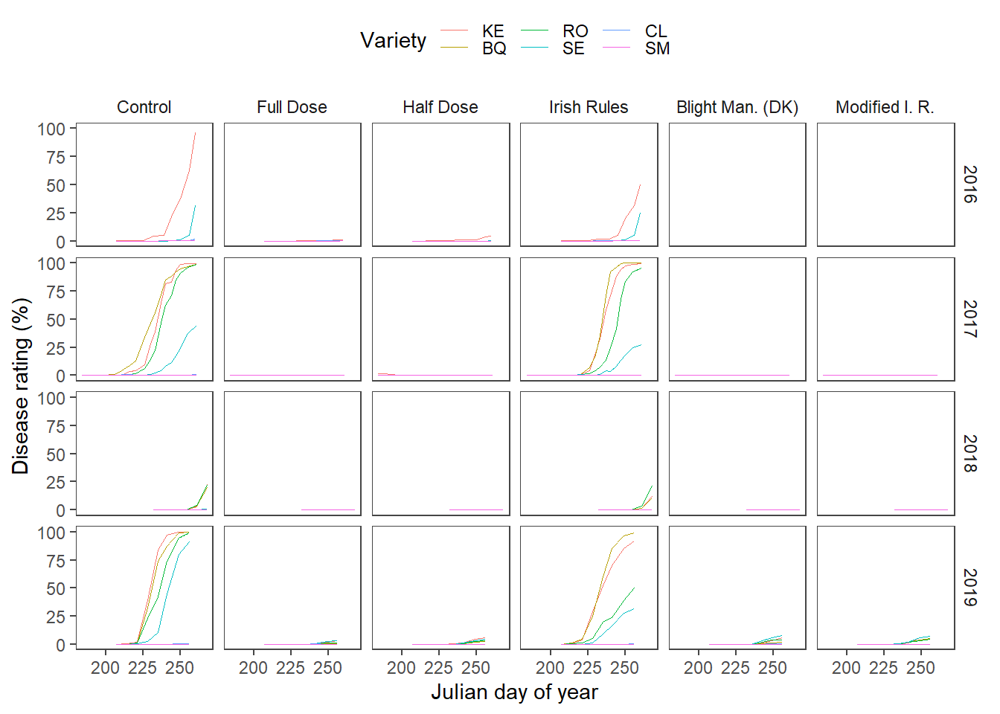
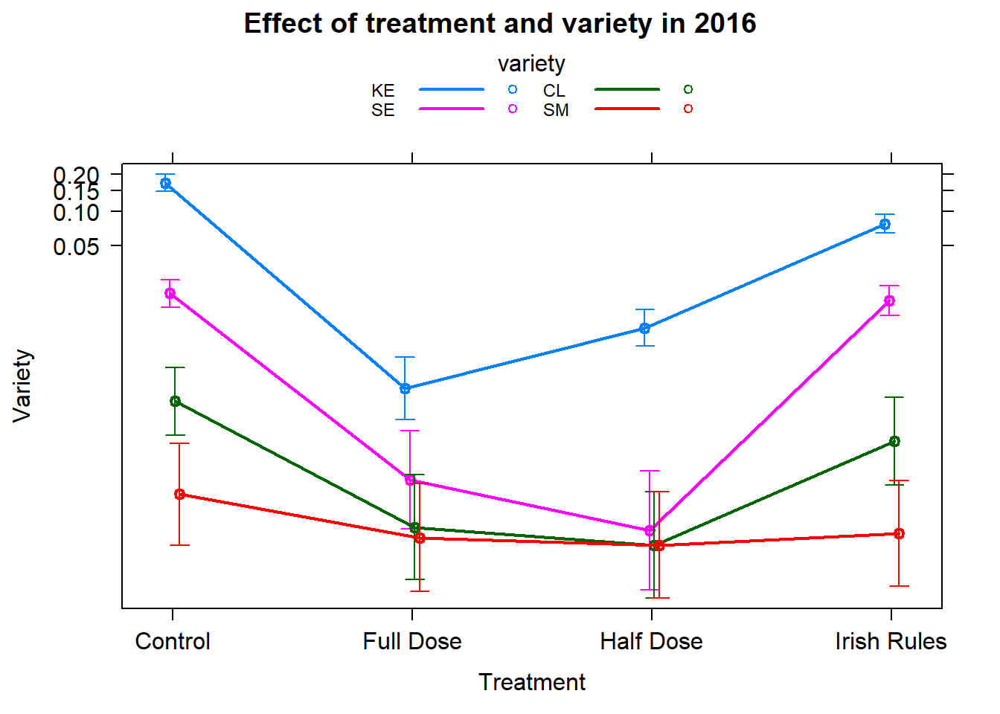

Data
Disease analysis
Impact of the dose reduction on the potato late blight development on potato varieties differing in their resistance level.
Load packages
list.of.packages <-
c(
"tidyverse",
"data.table",
"ggplot2",
"knitr",
"readxl",
"agricolae",
"egg",
"hrbrthemes",
"glmmTMB",
"sjPlot",
"effects",
"lsmeans",
"multcomp",
"car",
"ggridges",
"broom.mixed",
"pander",
"devtools"
)
new.packages <-
list.of.packages[!(list.of.packages %in% installed.packages()[, "Package"])]
#Download packages that are not already present in the library
if (length(new.packages))
install.packages(new.packages)
packages_load <-
lapply(list.of.packages, require, character.only = TRUE)
#Print warning if there is a problem with installing/loading some of packages
if (any(as.numeric(packages_load) == 0)) {
warning(paste("Package/s: ", paste(list.of.packages[packages_load != TRUE], sep = ", "), "not loaded!"))
} else {
print("All packages were successfully loaded.")
}## [1] "All packages were successfully loaded."rm(list.of.packages, new.packages, packages_load)
#if instal is not working try
#install.packages("ROCR", repos = c(CRAN="https://cran.r-project.org/"))The (disease) data
ls <-
map(list.files(here::here("data", "disease"), full.names = TRUE, pattern = "disease"), readRDS)
ls <-
lapply(ls, function(x) rename(x, date = "time" ))
ls <-
lapply(ls, function(x) ungroup(x) %>% mutate_if(is.factor, as.character) )
ls <-
map(ls, function(x)
x %>%
mutate(julian_day = yday(as.Date(date))) %>%
group_by(variety) %>%
mutate(time = ifelse(is.na(lag(julian_day)), 1,
julian_day - lag(julian_day))) %>%
mutate(time = cumsum(time)))
dis_obs <-
ls %>%
bind_rows()Summaries.
dis_obs %>%
rename(Year = year) %>%
group_by(Year) %>%
summarise(`Initial Disease Outbreak` = min(date),
`Final disease assesment` = max(date)) p1 <-
dis_obs %>%
bind_rows() %>%
unite(date, c(julian_day, year), sep = "/", remove = F) %>%
mutate(date = as.Date(date, format = "%j/%Y")) %>%
mutate(year = as.factor(year)) %>%
ggplot() +
ggridges::geom_ridgeline(aes(x=julian_day,y=as.factor(year),fill = year,height = 0.4),stat="identity")+
scale_x_continuous(
limits = c(150, 270),
expand = c(0, 0), name = "Day of year"
) +
scale_y_discrete(name = "Year")+
ggtitle("Durations of epidemics")+
ggridges::theme_ridges(center = TRUE)+
theme(legend.position = "none")
#Years, number of disease assesments and number of cultivars
p2 <-
lapply(ls, function(x) {
assessments <- length(unique(x$time))
cultivars <- length(unique(x$variety))
data.frame(assessments = assessments,
cultivars = cultivars)
}) %>%
bind_rows(.id = "year") %>%
gather(value, Number_of, assessments:cultivars) %>%
ggplot(aes(
x = year,
y = Number_of,
fill = value,
label = value
)) +
geom_bar(
stat = "identity",
color = "black",
position = position_dodge(),
width = 0.9
) +
geom_text(
aes(label = Number_of, y = Number_of - 1.3),
color = "white",
position = position_dodge(0.9),
size = 5
) +
ylab("count") +
scale_fill_brewer(palette = "Paired") +
theme_minimal() +
theme( axis.title.x = element_blank(),
axis.title.y = element_blank())+
labs(x = "Year", y = "", fill = "Number of:", title = "")+
scale_x_discrete(labels = unique(dis_obs$year))+
theme(legend.position = "top")+
coord_equal(1/4)
egg::ggarrange(p1,p2, ncol=2)ggsave(p1 ,filename= here::here("results", "dis", "no of cultivars&assesssments.png"), width = 4, height = 4, dpi = 620)
ggsave(p2, filename= here::here("results", "dis", "Duration of the epidemics in years.png"))Calculate the relative area under the disease progress curve (rAUDPC).
dis_obs <-
dis_obs[!rowSums(is.na(dis_obs))>0,]
dis_obs$treatment <-
factor(dis_obs$treatment,
levels = c("Control", "Full Dose","Half Dose","Irish Rules","Blight Man. (DK)" ,"Modified I. R."))
dis_obs <-
dis_obs %>%
ungroup() %>%
mutate(variety = ifelse(variety == "T5821/11", "CL",
ifelse(variety == "King Edward" , "KE",
ifelse(variety == "Setanta", "SE",
ifelse(variety == "Sarpo Mira", "SM",
ifelse(variety == "Rooster", "RO",
ifelse(variety == "British Queen", "BQ", ""))))))) %>%
mutate(variety = factor(variety, levels =c("KE","BQ", "RO", "SE", "CL","SM")))
saveRDS(dis_obs,file = here::here("data", "disease", "dis_obs.rds") )
audpc_data <-
dis_obs %>%
bind_rows() %>%
group_by(year, treatment, variety, bloc) %>%
summarize(rAUDPC = audpc(obs, julian_day, type = "relative")) %>%
ungroup()Visualise the data
audpc_data$block<-factor(audpc_data$bloc)
audpc_data$year<-factor(audpc_data$year)Different visualisations are neccessary to get an idea about the data at our hands. However, people percieve the visualisations in different ways, so there are few presented here.
Here we present the response, level of the disease in relation to three factors fungicide programme, potato variety and year.
audpc_plot <-
audpc_data %>%
bind_rows() %>%
group_by(variety) %>%
ggplot(aes(x = as.factor(variety),
y = rAUDPC,
colour= as.factor(variety),
group = as.factor(variety))) +
geom_dotplot(binaxis='y',
stackdir='center',
dotsize = .3)+
geom_boxplot(width = 0.3,binwidth = 100)+
theme_bw()+
xlab("model")+
ggtitle("rAUDPC of potato varieties per Fungicide programme")+
facet_grid(year~treatment, scales = "free"
)+
scale_colour_brewer("Variety:",
palette = "Dark2")+
theme(
axis.text.x=element_blank(),
axis.ticks.x=element_blank())+
ggsave(filename= here::here("results", "dis", "rAUDPC.png"),
width = 8, height = 5, dpi = 620)
audpc_plotMeans across replicates are presented in the heatmap.
audpc_data %>%
#Shorten the names and ste levels of the factor
group_by(year, treatment,variety) %>%
summarise(rAUDPC = mean(rAUDPC)) %>%
ggplot( aes(variety,treatment, fill = rAUDPC))+
geom_tile() +
facet_grid(~year)+
# scale_fill_gradient(low="white", high="blue", na.value = "grey50") +
scale_fill_distiller(palette = "Blues", direction = 2) +
theme_article()+
labs(x = "Programme", y = "Variety")+
ggsave(filename= here::here("results", "dis", "rAUDPC heatmap.png"),
width = 7.5, height = 2.1, dpi = 620
) Finally, the means of the replicates of the disease progres is presented below.
Finally, the means of the replicates of the disease progres is presented below.
max_time <-
dis_obs$time %>% max
# as.mmdd <- function(x, ...) UseMethod("as.mmdd")
# as.mmdd.Date <- function(x, ...) structure(x, class = c("mmdd", "Date"))
# as.Date.mmdd <- function(x, ...) structure(x, class = "Date")
# format.mmdd <- function(x, format = "%m-%d", ...) format(as.Date(x), format = format, ...)
#
# DF <- data.frame(x = as.Date("2018-03-26") + 0:2) # test data
#
# dis_obs <- transform(dis_obs, date = as.mmdd(date))
dis_obs %>%
group_by(treatment, variety, year, julian_day) %>%
summarise(rating = mean(obs)) %>%
ggplot(aes(x = julian_day,
y = rating,
colour = variety,
group = variety)) +
geom_line(aes(y = rating),
size = 0.2,
linetype = "dotted") +
# scale_x_continuous(labels = c())+
scale_y_continuous(limits = c(0, 100))+
geom_line(size = 0.3) +
ylab("Disease rating (%)") +
xlab("Julian day of year") +
labs(colour = "Variety")+
facet_grid(year~treatment,
scales = "free") +
# ggtitle("Disease progress curves") +
egg::theme_article() +
theme(legend.position = "top")+
ggsave(filename= here::here("results", "dis", "dpc.png"),width = 7, height = 5, dpi = 820
)
Model fitting procedure
See the distribution of the data.
hist(audpc_data$rAUDPC)
The response (rAUDPC) is a proportion and we have a random component so we will analyse this data with beta general mixed effects models (GLMM). Adding small numeric constant to the 0 values. Anova tables are calculated using Wald chi-square statistics for comparisons.
audpc_data$block<-factor(audpc_data$bloc)
audpc_data$year<-factor(audpc_data$year)
audpc_data$rAUDPC_adj <- audpc_data$rAUDPC
audpc_data$rAUDPC_adj[audpc_data$rAUDPC == 0] <- 1e-10Since two levels are missing in the year 2016 it is analysed separately.
fit_2016 <- glmmTMB(rAUDPC_adj ~ block + treatment * variety + (1 | block:treatment),
family = beta_family,
data = subset(audpc_data, year == "2016"))
car::Anova(fit_2016)The treatment variety interaction is significant.
Goodness of fit tests.
aov_residuals<-residuals(object = fit_2016)
shapiro.test(aov_residuals)##
## Shapiro-Wilk normality test
##
## data: aov_residuals
## W = 0.65538, p-value = 6.879e-11plot(fitted(fit_2016), residuals(fit_2016), xlab = "Fitted Values", ylab = "Residuals")
abline(h = 0, lty = 2)t <- broom.mixed::tidy(fit_2016, conf.int = TRUE)
t <-
filter(t, effect != "ran_pars") %>%
dplyr::select(-c(component, group))
write_csv(t, path = here::here("results", "dis", "2016fit.csv"))Second model is fitted to the rest of the data.
fit_rest <- glmmTMB(rAUDPC_adj ~ block:year + year * treatment * variety + (1 | block:treatment:year),
family = beta_family,
data = subset(audpc_data, year != "2016"))
car::Anova(fit_rest)Goodness of fit tests.
aov_residuals<-residuals(object = fit_rest)
shapiro.test(aov_residuals)##
## Shapiro-Wilk normality test
##
## data: aov_residuals
## W = 0.48083, p-value < 2.2e-16plot(fitted(fit_rest), residuals(fit_rest), xlab = "Fitted Values", ylab = "Residuals")
abline(h = 0, lty = 2)t1 <- broom.mixed::tidy(fit_rest, conf.int = TRUE)
t1 <-
filter(t1, effect != "ran_pars") %>%
dplyr::select(-c(component, group))
panderOptions('round', 2)
panderOptions('keep.trailing.zeros', TRUE)
pander(poly_3_fit, add.significance.stars = TRUE)Error in pander(poly_3_fit, add.significance.stars = TRUE) : object ‘poly_3_fit’ not found Calls:
write_csv(t1, path = here::here("results", "dis", "fit_rest.csv"))Post hoc
ae <- allEffects(fit_2016)
plot(ae,multiline=TRUE,confint=TRUE,ci.style="bars"
,main="Effect of treatment and variety in 2016"
,xlab="Treatment"
,ylab="Variety"); rm(ae)
e <- allEffects(fit_rest)
plot(e,multiline=TRUE,confint=TRUE,ci.style="bars"
,main="Effect of treatment and variety 2017-2019"
,xlab="Treatment"
,ylab="Variety"); rm(e)
posthoc<-
emmeans:: lsmeans(fit_2016, pairwise~treatment * variety, adjust="tukey", type = "response")
d2016 <-
cld(posthoc[[1]],
alpha =.05,
Letters=letters)
d2016 <-
d2016 %>%
tbl_df() %>%
unite( "pairs", variety, treatment, sep = ":",remove= FALSE )
d2016$.group <- trimws(d2016$.group)
d2016$pairs <-
factor(d2016$pairs, levels = d2016$pairs[order(d2016$prop)])
ggplot(d2016, aes(x=pairs, y = prop, colour = treatment))+
geom_errorbar(aes(ymin=lower.CL, ymax=upper.CL), width=.2)+
geom_point(size = .1)+
scale_color_brewer("Programme:", palette = "Dark2") +
labs(x=" ", y="CI")+ coord_flip()+
geom_text(
aes(label = .group),
vjust = -0.5,
hjust = 0.3,
color = "black",
position = position_dodge(0.9),
size = 2
) +
theme_bw()+
ggsave(filename= here::here("results", "dis", "pairwise comparisons 2016.png"),
width = 7, height = 2.5, dpi = 620)
posthoc<- emmeans:: lsmeans(fit_rest, ~treatment * variety *year, adjust="tukey", type = "response")
drest <- posthoc
(drest <-
cld(posthoc,
alpha = .05,
Letters=letters))drest <-
drest %>%
tbl_df() %>%
unite( "pairs", variety, treatment, year, year, sep = ":",remove= FALSE )
drest$pairs <-
factor(drest$pairs, levels = drest$pairs[order(drest$prop)])
drest$.group <- trimws(drest$.group)
ggplot(drest, aes(x=pairs, y = prop, colour = treatment))+
geom_errorbar(aes(ymin=lower.CL, ymax=upper.CL), width=.2)+
geom_point(size = .1)+
scale_color_brewer("Programme:", palette = "Dark2") +
labs(x=" ", y="CI")+ coord_flip()+
geom_text(
aes(label = .group),
vjust = -0.5,
hjust = 0.3,
color = "black",
position = position_dodge(0.9),
size = 2
) +
theme_bw()+
theme(axis.text.y = element_text(size = 8))+
ggsave(filename= here::here("results", "dis", "pairwise comparisons.png"),
width = 7, height = 11.5, dpi = 420)
The model fits are combined in a single data set and presented in a single Figure.
d1 <-
dplyr::bind_rows(d2016, drest)
d1 <-
d1 %>%
mutate(variety = factor(variety, levels =c("KE","BQ", "RO", "SE", "CL","SM"))) %>%
mutate(year = factor(year, levels =c("2016","2017", "2018", "2019"))) %>%
mutate(treatment = factor(treatment, levels = c("Control", "Full Dose","Half Dose","Irish Rules","Blight Man. (DK)" ,"Modified I. R.")))#Set the position dodge
dodging <- .8
p_fin <-
d1 %>%
#Add vertical lines for clarity
mutate(
line_positions = as.numeric(factor(variety, levels = unique(variety))),
line_positions = line_positions + .5,
line_positions = ifelse(line_positions == max(line_positions), NA, line_positions),
line_positions = ifelse(year == 2016 &
variety == "CL", 5.5, line_positions),
line_positions = ifelse(year == 2016 &
variety == "SE", 3.5, line_positions)
) %>%
ggplot(data = ., aes(x = variety, y = prop)) +
geom_errorbar(
aes(
ymin = lower.CL,
ymax = upper.CL,
group = treatment,
color = treatment
),
position = position_dodge(width = dodging),
width = .2
) +
geom_point(
aes(y = prop, group = treatment, color = treatment),
size = 1,
shape = 2,
position = position_dodge(width = dodging)
) +
facet_wrap(~ year, nrow = 1) +
geom_point(
data = subset(audpc_data),
aes(y = rAUDPC_adj, color = treatment, group = treatment),
size = .2,
alpha = .5,
position = position_dodge(width = dodging)
) +
theme_article() +
theme(legend.position = "top") +
geom_vline(aes(xintercept = line_positions),
size = .2,
alpha = .6) +
labs(colour = "Programme:",
x = "Variety",
y = "rAUDPC")
p_fin
ggsave(
p_fin,
filename = here::here("results", "dis", "Effects final.png"),
width = 7,
height = 3.7,
dpi = 820
)
rm(p_fin)session_info()## - Session info ----------------------------------------------------------
## setting value
## version R version 3.6.1 (2019-07-05)
## os Windows 10 x64
## system x86_64, mingw32
## ui RTerm
## language (EN)
## collate English_United States.1252
## ctype English_United States.1252
## tz Europe/London
## date 2019-11-04
##
## - Packages --------------------------------------------------------------
## ! package * version date lib source
## abind 1.4-5 2016-07-21 [1] CRAN (R 3.6.0)
## agricolae * 1.3-1 2019-04-04 [1] CRAN (R 3.6.1)
## AlgDesign 1.1-7.3 2014-10-15 [1] CRAN (R 3.6.0)
## assertthat 0.2.1 2019-03-21 [1] CRAN (R 3.6.1)
## backports 1.1.5 2019-10-02 [1] CRAN (R 3.6.1)
## bayestestR 0.4.0 2019-10-20 [1] CRAN (R 3.6.1)
## boot 1.3-22 2019-04-02 [2] CRAN (R 3.6.1)
## broom 0.5.2 2019-04-07 [1] CRAN (R 3.6.1)
## broom.mixed * 0.2.4 2019-02-21 [1] CRAN (R 3.6.1)
## callr 3.3.2 2019-09-22 [1] CRAN (R 3.6.1)
## car * 3.0-4 2019-10-27 [1] CRAN (R 3.6.1)
## carData * 3.0-2 2018-09-30 [1] CRAN (R 3.6.0)
## cellranger 1.1.0 2016-07-27 [1] CRAN (R 3.6.1)
## class 7.3-15 2019-01-01 [2] CRAN (R 3.6.1)
## classInt 0.4-2 2019-10-17 [1] CRAN (R 3.6.1)
## cli 1.1.0 2019-03-19 [1] CRAN (R 3.6.1)
## cluster 2.1.0 2019-06-19 [2] CRAN (R 3.6.1)
## coda 0.19-3 2019-07-05 [1] CRAN (R 3.6.1)
## codetools 0.2-16 2018-12-24 [2] CRAN (R 3.6.1)
## colorspace 1.4-1 2019-03-18 [1] CRAN (R 3.6.1)
## combinat 0.0-8 2012-10-29 [1] CRAN (R 3.6.0)
## crayon 1.3.4 2017-09-16 [1] CRAN (R 3.6.1)
## curl 4.2 2019-09-24 [1] CRAN (R 3.6.1)
## data.table * 1.12.6 2019-10-18 [1] CRAN (R 3.6.1)
## DBI 1.0.0 2018-05-02 [1] CRAN (R 3.6.1)
## deldir 0.1-23 2019-07-31 [1] CRAN (R 3.6.1)
## desc 1.2.0 2018-05-01 [1] CRAN (R 3.6.1)
## devtools * 2.2.1 2019-09-24 [1] CRAN (R 3.6.1)
## digest 0.6.22 2019-10-21 [1] CRAN (R 3.6.1)
## dplyr * 0.8.3 2019-07-04 [1] CRAN (R 3.6.1)
## e1071 1.7-2 2019-06-05 [1] CRAN (R 3.6.1)
## effects * 4.1-3 2019-10-27 [1] CRAN (R 3.6.1)
## egg * 0.4.5 2019-07-13 [1] CRAN (R 3.6.1)
## ellipsis 0.3.0 2019-09-20 [1] CRAN (R 3.6.1)
## emmeans * 1.4.2 2019-10-24 [1] CRAN (R 3.6.1)
## estimability 1.3 2018-02-11 [1] CRAN (R 3.6.0)
## evaluate 0.14 2019-05-28 [1] CRAN (R 3.6.1)
## expm 0.999-4 2019-03-21 [1] CRAN (R 3.6.1)
## extrafont 0.17 2014-12-08 [1] CRAN (R 3.6.0)
## extrafontdb 1.0 2012-06-11 [1] CRAN (R 3.6.0)
## fastmap 1.0.1 2019-10-08 [1] CRAN (R 3.6.1)
## forcats * 0.4.0 2019-02-17 [1] CRAN (R 3.6.1)
## foreign 0.8-71 2018-07-20 [2] CRAN (R 3.6.1)
## fs 1.3.1 2019-05-06 [1] CRAN (R 3.6.1)
## gdata 2.18.0 2017-06-06 [1] CRAN (R 3.6.0)
## gdtools 0.2.1 2019-10-14 [1] CRAN (R 3.6.1)
## generics 0.0.2 2018-11-29 [1] CRAN (R 3.6.1)
## ggeffects 0.12.0 2019-09-03 [1] CRAN (R 3.6.1)
## ggplot2 * 3.2.1 2019-08-10 [1] CRAN (R 3.6.1)
## ggrepel 0.8.1 2019-05-07 [1] CRAN (R 3.6.1)
## ggridges * 0.5.1 2018-09-27 [1] CRAN (R 3.6.1)
## glmmTMB * 0.2.3 2019-01-11 [1] CRAN (R 3.6.1)
## glue 1.3.1 2019-03-12 [1] CRAN (R 3.6.1)
## gmodels 2.18.1 2018-06-25 [1] CRAN (R 3.6.1)
## gridExtra * 2.3 2017-09-09 [1] CRAN (R 3.6.1)
## gtable 0.3.0 2019-03-25 [1] CRAN (R 3.6.1)
## gtools 3.8.1 2018-06-26 [1] CRAN (R 3.6.0)
## haven 2.1.1 2019-07-04 [1] CRAN (R 3.6.1)
## here 0.1 2017-05-28 [1] CRAN (R 3.6.1)
## highr 0.8 2019-03-20 [1] CRAN (R 3.6.1)
## hms 0.5.2 2019-10-30 [1] CRAN (R 3.6.1)
## hrbrthemes * 0.6.0 2019-01-21 [1] CRAN (R 3.6.1)
## htmltools 0.4.0 2019-10-04 [1] CRAN (R 3.6.1)
## httpuv 1.5.2 2019-09-11 [1] CRAN (R 3.6.1)
## httr 1.4.1 2019-08-05 [1] CRAN (R 3.6.1)
## insight 0.6.0 2019-10-17 [1] CRAN (R 3.6.1)
## jsonlite 1.6 2018-12-07 [1] CRAN (R 3.6.1)
## KernSmooth 2.23-15 2015-06-29 [2] CRAN (R 3.6.1)
## klaR 0.6-14 2018-03-19 [1] CRAN (R 3.6.1)
## knitr * 1.25 2019-09-18 [1] CRAN (R 3.6.1)
## labeling 0.3 2014-08-23 [1] CRAN (R 3.6.0)
## later 1.0.0 2019-10-04 [1] CRAN (R 3.6.1)
## lattice 0.20-38 2018-11-04 [2] CRAN (R 3.6.1)
## lazyeval 0.2.2 2019-03-15 [1] CRAN (R 3.6.1)
## LearnBayes 2.15.1 2018-03-18 [1] CRAN (R 3.6.0)
## lifecycle 0.1.0 2019-08-01 [1] CRAN (R 3.6.1)
## lme4 1.1-21 2019-03-05 [1] CRAN (R 3.6.1)
## lsmeans * 2.30-0 2018-11-02 [1] CRAN (R 3.6.1)
## lubridate 1.7.4 2018-04-11 [1] CRAN (R 3.6.1)
## magrittr 1.5 2014-11-22 [1] CRAN (R 3.6.1)
## MASS * 7.3-51.4 2019-03-31 [2] CRAN (R 3.6.1)
## Matrix 1.2-17 2019-03-22 [2] CRAN (R 3.6.1)
## memoise 1.1.0 2017-04-21 [1] CRAN (R 3.6.1)
## mime 0.7 2019-06-11 [1] CRAN (R 3.6.0)
## miniUI 0.1.1.1 2018-05-18 [1] CRAN (R 3.6.1)
## minqa 1.2.4 2014-10-09 [1] CRAN (R 3.6.1)
## mitools 2.4 2019-04-26 [1] CRAN (R 3.6.1)
## mnormt 1.5-5 2016-10-15 [1] CRAN (R 3.6.0)
## modelr 0.1.5 2019-08-08 [1] CRAN (R 3.6.1)
## multcomp * 1.4-10 2019-03-05 [1] CRAN (R 3.6.1)
## multcompView 0.1-7 2015-07-31 [1] CRAN (R 3.6.1)
## munsell 0.5.0 2018-06-12 [1] CRAN (R 3.6.1)
## mvtnorm * 1.0-11 2019-06-19 [1] CRAN (R 3.6.0)
## nlme 3.1-140 2019-05-12 [2] CRAN (R 3.6.1)
## nloptr 1.2.1 2018-10-03 [1] CRAN (R 3.6.1)
## nnet 7.3-12 2016-02-02 [2] CRAN (R 3.6.1)
## openxlsx 4.1.2 2019-10-29 [1] CRAN (R 3.6.1)
## pander * 0.6.3 2018-11-06 [1] CRAN (R 3.6.1)
## parameters 0.2.0 2019-09-26 [1] CRAN (R 3.6.1)
## performance 0.4.0 2019-10-21 [1] CRAN (R 3.6.1)
## pillar 1.4.2 2019-06-29 [1] CRAN (R 3.6.1)
## pkgbuild 1.0.6 2019-10-09 [1] CRAN (R 3.6.1)
## pkgconfig 2.0.3 2019-09-22 [1] CRAN (R 3.6.1)
## pkgload 1.0.2 2018-10-29 [1] CRAN (R 3.6.1)
## plyr 1.8.4 2016-06-08 [1] CRAN (R 3.6.1)
## prettyunits 1.0.2 2015-07-13 [1] CRAN (R 3.6.1)
## processx 3.4.1 2019-07-18 [1] CRAN (R 3.6.1)
## promises 1.1.0 2019-10-04 [1] CRAN (R 3.6.1)
## ps 1.3.0 2018-12-21 [1] CRAN (R 3.6.1)
## psych 1.8.12 2019-01-12 [1] CRAN (R 3.6.1)
## purrr * 0.3.3 2019-10-18 [1] CRAN (R 3.6.1)
## questionr 0.7.0 2018-11-26 [1] CRAN (R 3.6.1)
## R6 2.4.0 2019-02-14 [1] CRAN (R 3.6.1)
## RColorBrewer 1.1-2 2014-12-07 [1] CRAN (R 3.6.0)
## Rcpp 1.0.2 2019-07-25 [1] CRAN (R 3.6.1)
## readr * 1.3.1 2018-12-21 [1] CRAN (R 3.6.1)
## readxl * 1.3.1 2019-03-13 [1] CRAN (R 3.6.1)
## remotes 2.1.0 2019-06-24 [1] CRAN (R 3.6.1)
## reshape2 1.4.3 2017-12-11 [1] CRAN (R 3.6.1)
## rio 0.5.16 2018-11-26 [1] CRAN (R 3.6.1)
## rlang 0.4.1 2019-10-24 [1] CRAN (R 3.6.1)
## rmarkdown 1.16 2019-10-01 [1] CRAN (R 3.6.1)
## rprojroot 1.3-2 2018-01-03 [1] CRAN (R 3.6.1)
## rstudioapi 0.10 2019-03-19 [1] CRAN (R 3.6.1)
## Rttf2pt1 1.3.7 2018-06-29 [1] CRAN (R 3.6.0)
## rvest 0.3.4 2019-05-15 [1] CRAN (R 3.6.1)
## sandwich 2.5-1 2019-04-06 [1] CRAN (R 3.6.1)
## scales 1.0.0 2018-08-09 [1] CRAN (R 3.6.1)
## sessioninfo 1.1.1 2018-11-05 [1] CRAN (R 3.6.1)
## sf 0.8-0 2019-09-17 [1] CRAN (R 3.6.1)
## shiny 1.4.0 2019-10-10 [1] CRAN (R 3.6.1)
## sjlabelled 1.1.1 2019-09-13 [1] CRAN (R 3.6.1)
## sjmisc 2.8.2 2019-09-24 [1] CRAN (R 3.6.1)
## sjPlot * 2.7.2 2019-09-29 [1] CRAN (R 3.6.1)
## sjstats 0.17.6 2019-09-08 [1] CRAN (R 3.6.1)
## sp 1.3-1 2018-06-05 [1] CRAN (R 3.6.1)
## spData 0.3.2 2019-09-19 [1] CRAN (R 3.6.1)
## spdep 1.1-3 2019-09-18 [1] CRAN (R 3.6.1)
## stringi 1.4.3 2019-03-12 [1] CRAN (R 3.6.0)
## stringr * 1.4.0 2019-02-10 [1] CRAN (R 3.6.1)
## survey 3.36 2019-04-27 [1] CRAN (R 3.6.1)
## survival * 2.44-1.1 2019-04-01 [2] CRAN (R 3.6.1)
## systemfonts 0.1.1 2019-07-01 [1] CRAN (R 3.6.1)
## testthat 2.2.1 2019-07-25 [1] CRAN (R 3.6.1)
## TH.data * 1.0-10 2019-01-21 [1] CRAN (R 3.6.1)
## tibble * 2.1.3 2019-06-06 [1] CRAN (R 3.6.1)
## tidyr * 1.0.0 2019-09-11 [1] CRAN (R 3.6.1)
## tidyselect 0.2.5 2018-10-11 [1] CRAN (R 3.6.1)
## tidyverse * 1.2.1 2017-11-14 [1] CRAN (R 3.6.1)
## D TMB 1.7.15 2018-11-09 [1] CRAN (R 3.6.1)
## units 0.6-5 2019-10-08 [1] CRAN (R 3.6.1)
## usethis * 1.5.1 2019-07-04 [1] CRAN (R 3.6.1)
## vctrs 0.2.0 2019-07-05 [1] CRAN (R 3.6.1)
## withr 2.1.2 2018-03-15 [1] CRAN (R 3.6.1)
## xfun 0.10 2019-10-01 [1] CRAN (R 3.6.1)
## xml2 1.2.2 2019-08-09 [1] CRAN (R 3.6.1)
## xtable 1.8-4 2019-04-21 [1] CRAN (R 3.6.1)
## yaml 2.2.0 2018-07-25 [1] CRAN (R 3.6.0)
## zeallot 0.1.0 2018-01-28 [1] CRAN (R 3.6.1)
## zip 2.0.4 2019-09-01 [1] CRAN (R 3.6.1)
## zoo 1.8-6 2019-05-28 [1] CRAN (R 3.6.1)
##
## [1] C:/Users/mlade/Documents/R/win-library/3.6
## [2] C:/Program Files/R/R-3.6.1/library
##
## D -- DLL MD5 mismatch, broken installation.